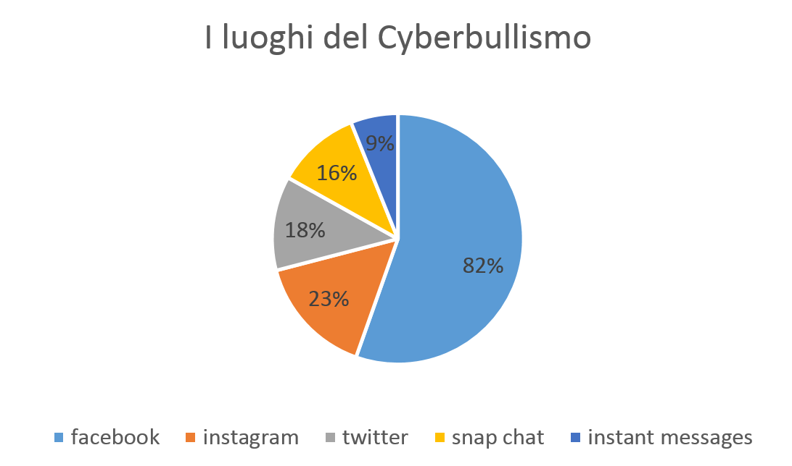
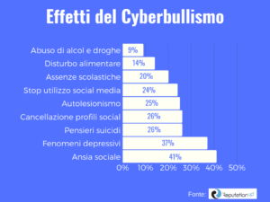

Dati Statistici
Secondo gli ultimi dati UNESCO, provenienti da indagini condotte in paesi industrializzati, la percentuale di minorenni che ha sperimentato cyberbullismo varia tra il 5% e il 20% della popolazione minorile, con conseguenze psicofisiche che vanno dal mal di testa ai dolori allo stomaco e/o che si manifestano con mancanza di appetito o disturbi del sonno. Coloro che hanno sperimentato episodi di bullismo/cyberbullismo hanno inoltre maggiori probabilità di sviluppare difficoltà relazionali, di sentirsi depressi, soli, ansiosi, di avere scarsa autostima o sperimentare pensieri suicidi. L'aumento del cyberbullismo riflette la rapida espansione dell’accesso di bambini e ragazzi ad internet: nel 2017 circa il 70% della popolazione mondiale tra i 15 e i 24 anni risultava connessa ad internet e dai dati provenienti da 7 Paesi europei, la percentuale di bambini e adolescenti tra gli 11 e i 16 anni esposti a cyberbullismo è aumentata tra il 2010 e il 2014 passando dal 7% al 12%.

